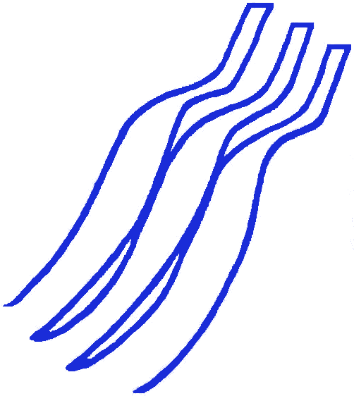
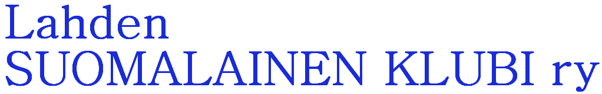

Vesijärven rannassa toimiva Bistro Satama ei yritä olla mitään muuta kuin on: hyvä paikka syödä kalaa, joka on pyydetty lähellä ja kypsennetty oikein.
Aloitimme savustetulla muikulla ja ruisleivällä. Muikut olivat kauniin kuparisia ja sopivan suolaisia, ja smetana toi niihin raikkautta. Pääruoaksi otimme päivän kuhan voikastikkeella ja uusilla perunoilla.
Kuha oli juuri niin kypsä kuin kuuluu: rapea nahka, mehevä liha.
Palvelu oli ystävällistä, joskin täydellä salilla hieman hidasta. Viinilista on lyhyt mutta hyvin valittu. Jälkiruoaksi kannattaa ottaa tyrnisorbetti.
Bistro Satama ei yritä olla mitään muuta kuin hyvä paikka syödä lähellä pyydettyä kalaa.
Aloitimme savustetulla muikulla ja ruisleivällä. Pääruoaksi otimme päivän kuhan voikastikkeella.
Rapea nahka, mehevä liha.